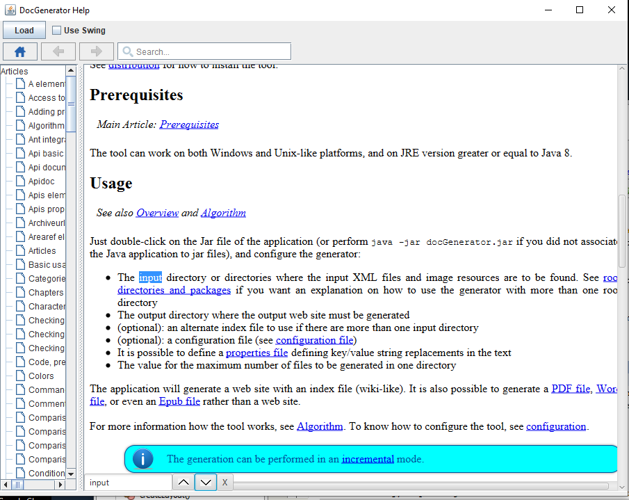

Home
Categories
Dictionary
Download
Project Details
Changes Log
What Links Here
How To
Syntax
FAQ
License
Help search in page
It is possible to show an auto-complete Search box at the top of the articles in the help GUI. This will allow to search for articles or even for terms in the whole wiki.
However you can also search for a term in any page by typing Ctrl+F as you could do in any Web browser.
This window contains:
To make it available, you must add several
Here is the syntax:
by default the possible exception will not be shown, and the search by CTRL+F will simply do nothing. It is possible to change this behavior in the HelpContentViewer.
However you can also search for a term in any page by typing Ctrl+F as you could do in any Web browser.
Usage
Just type CTRL+F in the article page, and a small window allowing to search in a page will appear:
This window contains:
- One text field for the search term
- One button to search forward a term
- One button to search backward a term
- One button to close the window
Limitations
Beginning with Java 9, the search function in page will not be available by default because it tries to make accessible a private internal field of the WebEngine.To make it available, you must add several
--add-opens:
--add-opens javafx.web/javafx.scene.web=ALL-UNNAMED --add-opens javafx.web/com.sun.webkit=ALL-UNNAMED
For information, you can use the --add-opens runtime option to allow your code to access non-public members. This can be referred to as deep reflection. Libraries that do this deep reflection are able to access all members, private and public. To grant this type of access to your code, you use the --add-opens option.Here is the syntax:
--add-opens module/package=target-module(,target-module)*
This allows the given module to open the specified package. The compiler will not produce any errors or warnings when this is used[1]
See also https://openjdk.org/jeps/261 for more information
Showing Help search exczptions
Main Article: Showing Help search exceptions
by default the possible exception will not be shown, and the search by CTRL+F will simply do nothing. It is possible to change this behavior in the HelpContentViewer.
Notes
- ^ See also https://openjdk.org/jeps/261 for more information
See also
- Search: This article is about the Search box which is shown on articles
×

Categories: JavaHelp